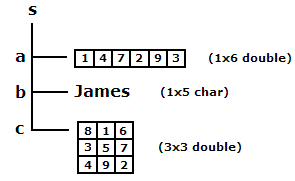

Data type: Structures
Partly copied from MATLAB Product Help
You don't need to write a structure in this lab, but you MUST learn how to use it!
Contents
What is a structure?
A structure is a MATLAB data type that provides the means to store selected data together in a single entity. A structure consists mainly of data containers, called fields, and each of these fields stores an array of some MATLAB data type. You assign a name to each field as you create the structure. The figure below shows a structure s that has three fields: a, b, and c. 
Each field of a structure contains a separate MATLAB array. This array can belong to any one MATLAB or user-defined class, and can have any valid array dimensions. A second field of the same structure can belong to an entirely different class, and can also have different dimensions than the first. The fields of the structure shown above, for example, contain a 1-by-6 array of class double, a 1-by-5 array of class char, and a 3-by-3 array of double.
Reasons to use a structure
Perhaps the most common reason for using a structure (or a cell array) is the ability to store arrays of mixed classes and sizes. Most MATLAB arrays must contain the same number of elements which must also be of the same class. The role of the structure, and cell array, as containers of heterogeneous data is very important.
A structure also provides the means to store selected data together in a single entity. This offers you the ability to access and operate on all or parts of the data collectively. You can apply functions directly to a structure, pass the structure to and from your M-file functions, display the value of any fields, or perform most any MATLAB operation on the contents of a structure.
A third reason to use structures is that they give you the ability to apply text labels to your data, as opposed to using array subscripting.
Structure fields
To access the contents of a struct array, you first need to find out what the names of its fields are. Simply type the name of the structure (e.g., s) tells you the name of its fields, and what type of class these fields are:
s
s =
a: [1 4 7 2 9 3]
b: 'James'
c: [3x3 double]
Then you can use the syntax s.a to read the information inside field a of the structure s:
s.a
ans =
1 4 7 2 9 3
Note: it is possible that a field of a structure is a structure itself, like isoc you are going to load from file isochrones.mat.